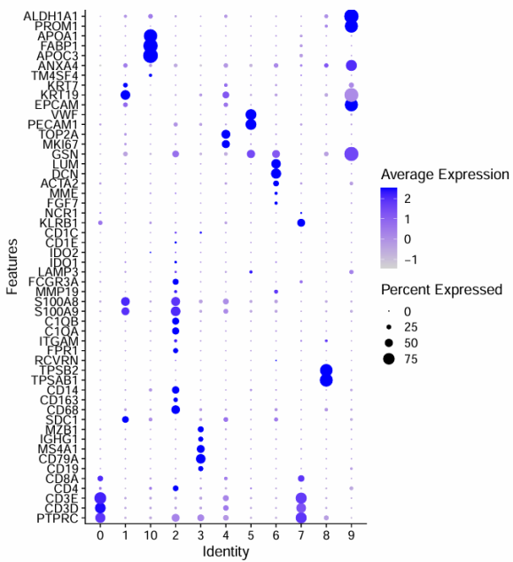

genes_to_check = c("PTPRC",
"EPCAM",
"CD3G","CD3E", # T cells
"CD79A", "BLNK", "MS4A1", # B cells
"CD68", "CSF1R", # Monocytes and macrophages
"MARCO", "CD207", "PMEL", "ALB", "C1QB", "CLDN5", "FCGR3B", "COL1A1")
p <- DotPlot(sce, features = genes_to_check) + coord_flip()
p细胞分群通用marker
参考原文：
1 区分免疫细胞和非免疫细胞
Immune: PTPRC (编码CD45)
Epithelial/cancer：EPCAM
Stromal (CD10+,MME, fibo or CD31+,PECAM1,endo)
Cells were defined as non-immune if belonging to a cluster low for PTPRC (gene for CD45) and high for any of the following genes:
MUC5A (goblet cell marker)
KRT5 (basal epithelial cell marker)
SFTPD (secretory cell marker)
EPCAM (pan-epithelial cell marker)
CDH5 (endothelial cell marker)
COL1A2 and ACTA2 (fibroblast markers)
所以你拿到自己的单细胞测序数据后，走完基础流程，可以直接看看这些基因的表达量分布图（气泡图或者小提琴图均可）。下面是一个例子：
接下来我们直接根据PTPRC的总表达量的中位数将所有细胞分为免疫细胞和非免疫细胞：
# Annotate Immune vs Nonimmune clusters
# At this point we dont care for a more detailed annotation as we will annotate immune and non-immune separately later
dat <- p$data
cd45 <- dat[dat$features.plot == 'PTPRC',]
fivenum(cd45$avg.exp.scaled)
imm <- cd45[cd45$avg.exp.scaled > -0.5,]$id
imm
sce$immune_annotation <- ifelse(sce$RNA_snn_res.0.5 %in% imm ,'immune', 'non-immune')
table(sce$immune_annotation)接下来可以进行 TSNE plot 可视化，看到免疫细胞和非免疫细胞是泾渭分明：
p <- TSNEPlot(object = sce, group.by = 'immune_annotation')
p2 区分出恶性细胞
很多情况下是靠inferCNV算法的结果，比如发表于2017年12月，在CELL杂志：Single-Cell Transcriptomic Analysis of Primary and Metastatic Tumor Ecosystems in Head and Neck Cancer 的文献，就是使用inferCNV算法对来自18名患者的5,902个细胞，分成2215个恶性细胞和3363个非恶性细胞如下所示：
可以看到，通过inferCNV算法，能发现非恶性细胞的CNV是几乎没有的，而恶性细胞呢，或多或少有一些染色体片段的拷贝数扩增或者缺失。
3 细胞初步分群通用marker

一般来说肿瘤样品的单细胞首先是按照如下所示的标记基因进行第一次分群 ：
免疫细胞共同标记：PTPRC
髓系细胞（myeloid）：CD163、AIF1
T cells：CD3D、CD3E、CD4、CD8A
B cells：CD19、CD79A、MS4A1（编码CD20）、SDC1、CD27、CD38
Plasma cells：IGHG1、MZB1、SDC1（编码CD138）、JCHAIN
Monocytes and macrophages：CD68、CD163、CD14
Monocyte：S100A9、S100A8、MMP19
Macrophages：C1QA、C1QB
Mast cells：TPSAB1、TPSB2
NK cells：KLRB1、KLRD1、NCR1、GNLY、NKG7
【NK Cells：FGFBP2, FCG3RA, CX3CR1】
Epithelial/cancer：EPCAM、KRT19、PROM1、ALDH1A1、CD24
Endothelial cells：PECAM1、VWF
Fibroblasts：FGF7、MME、ACTA2、COL3A1
genes_to_check = c('PTPRC',
"CD163","AIF1",
'CD3D', 'CD3E', 'CD4', 'CD8A',
'CD19', 'CD79A', 'MS4A1', "SDC1", "CD27", "CD38",
'IGHG1', 'MZB1', 'SDC1', "JCHAIN",
'CD68', 'CD163', 'CD14',
'S100A9', 'S100A8', 'MMP19',
'C1QA', 'C1QB',
'TPSAB1', 'TPSB2',
'KLRB1', "KLRD1", 'NCR1', "GNLY", "NKG7",
'FGF7', 'MME', 'ACTA2', "COL3A1",
'PECAM1', 'VWF',
'EPCAM', 'KRT19', 'PROM1', 'ALDH1A1')
案例
genes_to_check = c('PTPRC', 'CD3D', 'CD3E', 'CD4','CD8A',
'CD19', 'CD79A', 'MS4A1' ,
'IGHG1', 'MZB1', 'SDC1',
'CD68', 'CD163', 'CD14',
'TPSAB1' , 'TPSB2',
'RCVRN','FPR1' , 'ITGAM' ,
'C1QA', 'C1QB',
'S100A9', 'S100A8', 'MMP19',
'FCGR3A','LAMP3', 'IDO1','IDO2',## DC3
'CD1E','CD1C', # DC2
'KLRB1','NCR1',
'FGF7','MME', 'ACTA2',
'DCN', 'LUM', 'GSN' , # mouse PDAC fibo
'PECAM1', 'VWF',
'EPCAM' , 'KRT19','KRT7',
'FYXD2', 'TM4SF4', 'ANXA4',# 胆管上皮细胞
'APOC3', 'FABP1', 'APOA1', # 肝细胞
'Serpina1c','PROM1', 'ALDH1A1' )
DotPlot(sce.all,
features = genes_to_check,
assay='RNA',
group.by = 'celltype' ) +
coord_flip()
根据气泡图所示的marker基因表达情况，确定细胞分群如下
| Cluster ID | 细胞类型 |
|---|---|
| 0, 7 | T cells |
| 2 | Macrophages |
| 8 | Mast cells |
| 1, 9, 10 | Epithelial/cancer cells |
| 6 | Fibroblasts |
| 5 | Endothelial cells |
| 4 | Cycling |
| 3 | B cells |
髓系免疫细胞亚群:
th=theme(axis.text.x = element_text(angle = 45,
vjust = 0.5, hjust=0.5))
myeloids = list(
Mac=c("C1QA","C1QB","C1QC","SELENOP","RNASE1","DAB2","LGMN","PLTP","MAF","SLCO2B1"),
mono=c("VCAN","FCN1","CD300E","S100A12","EREG","APOBEC3A","STXBP2","ASGR1","CCR2","NRG1"),
neutrophils = c("FCGR3B","CXCR2","SLC25A37","G0S2","CXCR1","ADGRG3","PROK2","STEAP4","CMTM2" ),
pDC = c("GZMB","SCT","CLIC3","LRRC26","LILRA4","PACSIN1","CLEC4C","MAP1A","PTCRA","C12orf75"),
DC1 = c("CLEC9A","XCR1","CLNK","CADM1","ENPP1","SNX22","NCALD","DBN1","HLA-DOB","PPY"),
DC2 = c( "CD1C","FCER1A","CD1E","AL138899.1","CD2","GPAT3","CCND2","ENHO","PKIB","CD1B"),
DC3 = c("HMSD","ANKRD33B","LAD1","CCR7","LAMP3","CCL19","CCL22","INSM1","TNNT2","TUBB2B")
)
p <- DotPlot(sce.all, features = myeloids,
assay='RNA' ,group.by = 'celltype' ) +th
p